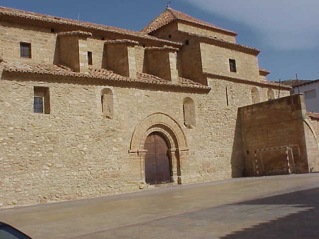
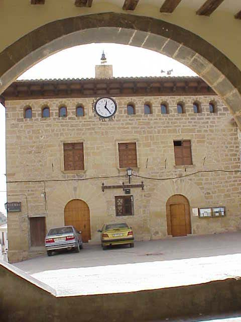
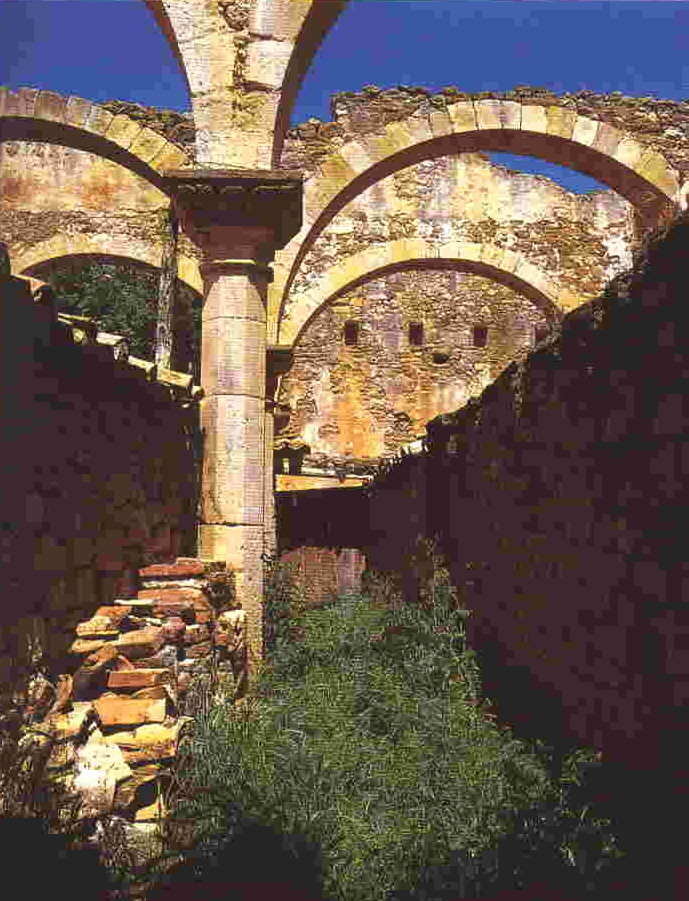
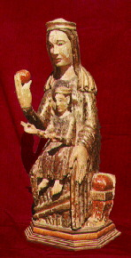
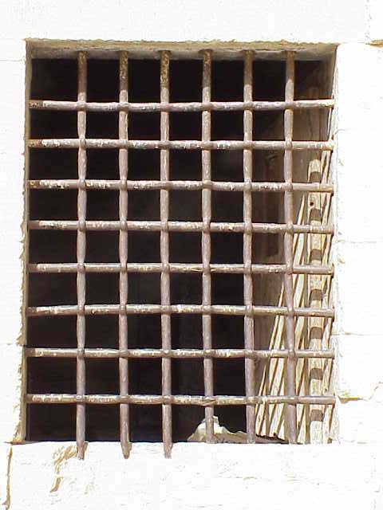
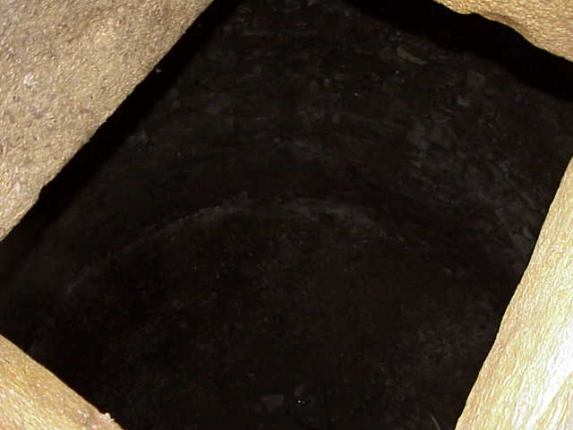
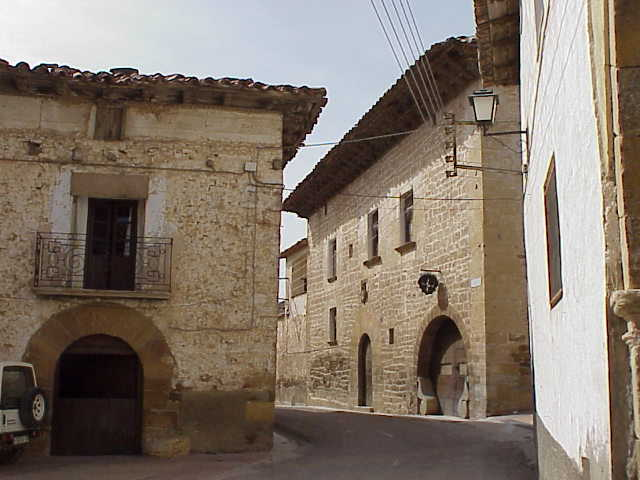
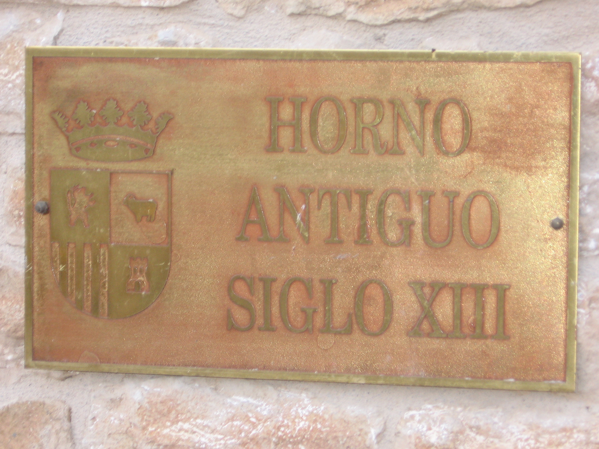
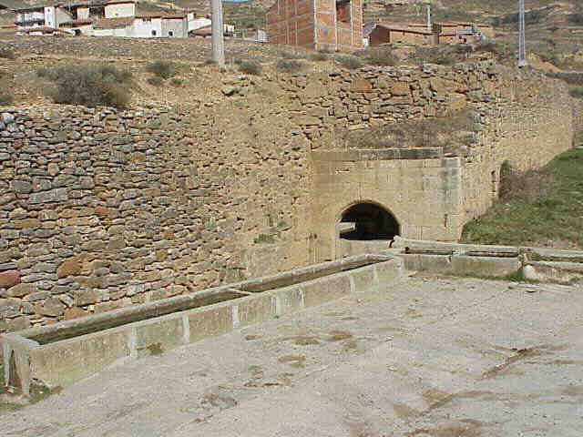

Edificios Históricos
Descubre el patrimonio arquitectónico de Olocau del Rey, con edificios que datan desde el siglo XI hasta el XVI, testigos de la rica historia de nuestro pueblo.
Descubre el patrimonio arquitectónico de Olocau del Rey, con edificios que datan desde el siglo XIII hasta el XVI, testigos de la rica historia de nuestro pueblo.

Castillo de Olcaf o Olocaf
De origen árabe, el Cid mandó su fortificación en 1028. Es de tipo montana y mediano porte, con tres recintos no concéntricos de irregularidad dispersa.
Año 1028
Cerro del castillo
XI
Siglo
Iglesia Parroquial
Dedicada a la Virgen del Pópulo, su puerta es románica, el interior es gótico con yesería barroca. Fue restaurada en 1954 y conserva altares con artesonado gótico.
Siglo XIV
Plaza de la Iglesia
XIV
Siglo
El Ayuntamiento
Situado en la plaza, es un edificio noble, construido en piedra de sillería, que consta de tres plantas. Restaurado hace unos años, posee una amplia sala y caja con siete llaves.
Año 1575
Plaza de Olocau del Rey
XVI
Siglo
Cofradía o Lonja de la Lana
En la actualidad, en total ruina, únicamente conserva parte de la fachada, una gran puerta muy deteriorada, y seis arcos de medio punto con columnas labradas.
Año 1541
Centro histórico
XVI
Siglo
Talla Virgen de la Naranja
Talla románica en madera policromada, datada entre los siglos XIII y XIV. Fue robada en 1924 y recuperada posteriormente. Existe una copia en la Basílica de Lidón.
Siglo XIII
Iglesia Parroquial
XIII
Siglo
La Cárcel
Situada en la plaza, frente al Ayuntamiento, consta de dos salas. Una de ellas tiene un pequeño orificio de desagüe y marcas masónicas en su interior.
Año 1555
Plaza principal
XVI
Siglo
La Nevera
Situada en la plaza de la Iglesia, su función era la de almacenar la nieve en invierno para conservar alimentos durante los meses cálidos.
Almacén de nieve
Plaza de la Iglesia
?
Siglo
Palacio de la Figuera
Edificio noble, de piedra, similar al Ayuntamiento, con amplia puerta y salones decorados con frescos, aunque actualmente en mal estado de conservación.
Palacio señorial
Centro histórico
XVI
Siglo
Horno Gótico
Pequeña sala que consta de tres arcos románicos, situada en la parte posterior de la Cofradía. Hasta hace unos años utilizada como horno, posiblemente en otra época formó parte de un edificio mayor.
Año 1272
Posterior a la Cofradía
XIII
Siglo
Fuente Gótica
Pequeña fuente situada en la parte baja del pueblo, labrada en piedra formando un interesante arco gótico de gran belleza arquitectónica.
Siglo XV
Parte baja del pueblo